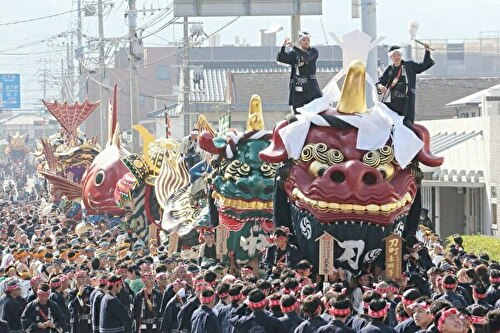
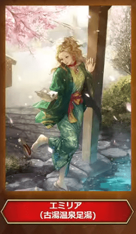
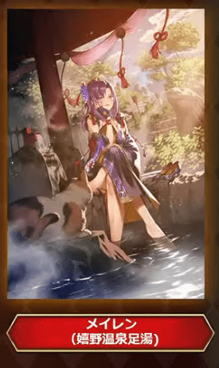
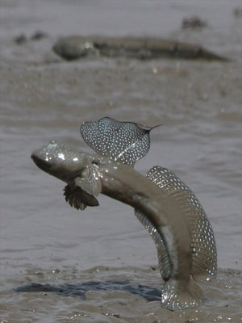
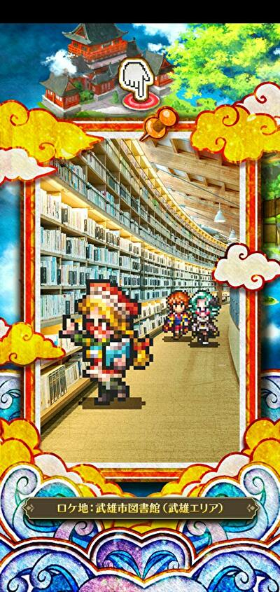

2021年のロマサガＲＳ佐賀県コラボを振り返る
ホーム > ロマサガＲＳ > ロマサガＲＳ佐賀コラボ_2021年はじめに
2021年の7月～8月にかけて、ロマサガＲＳのコラボイベント「ロマンシング佐賀 2021 サガ風呂」が開催されました。昨年同様、ずいぶんと凝ったコラボイベントでしたね。
佐賀情報満載でしたが、出来る限りの情報を昨年同様まとめてみたので是非見てみて下さい。
昨年の記事はこちら
今回のコラボの情報は、ロマサガRSだけではなく、佐賀県の広報部からも佐賀コラボの情報は発信されていました。
佐賀県の方からもこのように発信されるとなんだかうれしくなりますね。
【お知らせ】
— 佐賀県広報広聴課 (@saga_kouhou) July 29, 2021
『ロマンシング佐賀2021』と『ロマンシング サガ リ・ユニバース』のゲーム内コラボ第１弾開始✨
「みんなでいくばい！SaGa風呂制圧戦」を開催♨️
詳しくはこちら▼https://t.co/05XN0156pi#ロマ佐賀 pic.twitter.com/n2u91VpRPv
制圧戦
昨年同様、制圧戦に力が入っていたのでまた制圧戦を中心にまとめていきたいと思います。
全体マップ
全体マップはこんな感じです。始まりの湯、古湯温泉、嬉野温泉、武雄温泉の4つのエリアにわかれ、各エリアにサガフロの4天王とサガフロ2の将魔が1体ずつの合計2体のボスがいるという配置でした。

7/28 始まりの湯
まず始まりの湯から見ていきましょう。
対象のマップ

初日の対象エリアは上図の通り。サガフロ四天王の一人「シュウザー」と、サガフロ2の将魔の一人「音の将魔」がボスでした。
中央に緑色の屋根の建物がありますが、これはサガフロの主人公を選択する画面で出てくる建物です（下図でブルーが寄りかかっている建物）。

シュウザーも音の将魔も、佐賀県にまつわる技を使ってきたので、それをご紹介させていただきます。
シュウザー
シュウザーは「W・R・S・B」という技を使ってきました。
W・R・S・Bはワラスボ(WARASUBO)の母音です。佐賀市でもそう呼んでいるらしいw
参考：佐賀市 WRSB ワラスボ 公式サイト
去年はボクオーンがワラスボに担当でしたね。
youtubeにW・R・S・Bのプロモーションムービーが転がっていたので貼っておきますw
佐賀市プロモーションムービー 「W・R・S・B」
音の将魔
音の将魔は唐津くんちに関する技を使ってきました。
去年はロックブーケが唐津くんちを担当していましたね。
本場の唐津くんちはこんな感じらしいです。
去年記事を書いたときは動画を見て「凄い迫力！」ぐらいの感想で終わっていたのですが、そもそもこのお祭りは何のために、どんな願いを込めて開催されているのかが気になったので調べてみました。

画像は唐津くんち 秋季例大祭｜唐津神社の秋祭り／唐津から抜粋
まずこの上の写真の赤い顔の獅子とか何？って思っていたんですけど、これが曳山（ひきやま）と呼ばれているものらしいですね。
元々15台の曳山が製作されてたらしいのですが、うち1台は消失し、今日奉納されているのは14台らしいです。
| No | 名前 | 画像 |
|---|---|---|
| 1 | 刀町の赤獅子 |  |
| 2 | 中町の青獅子 |  |
| 3 | 材木町の亀と浦島太郎 | |
| 4 | 呉服町の源義経の兜 | |
| 5 | 魚屋町の鯛 | |
| 6 | 大石町の鳳凰丸 | |
| 7 | 新町の飛龍 | |
| 8 | 本町の金獅子 |  |
| 9 | 木綿町の武田信玄の兜 | |
| 元9番 | （消失）： 紺屋町の黒獅子 | - |
| 10 | 平野町の上杉謙信の兜 | |
| 11 | 京町の珠取獅子 | |
| 12 | 米屋町の酒呑童子と源頼光の兜 |  |
| 13 | 水主町の鯱 | |
| 14 | 江川町の七宝丸 |  |
曳山の展示場があるみたいですね（唐津市文化事業団 施設利用案内）。
この曳山を、先の動画のように「エンヤー！」って言いながら町の中を練り歩いていくんですね。
で、何のためにこんなことをしているの・・・？
以下、たびらい 唐津くんち 秋季例大祭｜唐津神社の秋祭り／唐津より引用。
『毎年11月2日～11月4日の3日間で行われる「唐津くんち」。唐津神社の秋季例大祭であり、唐津でも最大の行事です。“くんち”は「供日」とも書き、収穫感謝の意が込められています。佐賀県の有形文化財と国の重要無形民俗文化財に指定されており、「山・鉾・屋台行事」のひとつとしてユネスコ無形文化遺産にも登録されています。』
くんち
以下、Wikipedia くんちより引用
『くんちとは、九州北部における秋祭りに対する呼称。収穫を感謝して奉納される祭である。「おくんち」と称される場合もある。
ほとんどのくんち行事に共通する要素として、神社から御旅所まで神輿による御神幸が行われることがある。またそこに大名行列や稚児行列、山車（曳山、山笠など）、囃子、踊り、獅子舞などが加わるが、何が加わるかについてはその地域ごとに大きく異なり、同じ「くんち」と一括りにできないほど多彩なものになっている。』
引用終わり
くんちの語源は諸説あるみたいですけど、『収穫した作物を神に供える日、「供日（くにち）」から転じて「くんち」になった』とする説もあるぐらいですし、収穫を感謝して神様にお供えをするお祭りだったんですねー。
参考
その他制圧戦関連情報
制圧戦のドロップアイテムで佐賀県に関するものは3つあります。1つだけ、どこでご紹介するのが適切かわからなかったのでここで紹介させていただきます。
名尾手漉和紙（なおてすきわし）の扇子
佐賀県佐賀市大和町には「名尾手すき和紙」という、原料である梶の木の栽培から手漉きで和紙にするまでの全工程を1つの工房で行って作る和紙があります。
以下、名尾手すき和紙 公式サイトより引用
『300年の歴史を持つ名尾手すき和紙は、和紙の原料のひとつである梶の木の栽培から一枚の紙ができるまでの全ての工程を佐賀県の名尾で行う手すき紙の工房です。名尾は豊かな湧き水と原料栽培に適した寒暖差をもたらす谷に位置し、かつて100軒もの紙すき工房が軒を連ねましたが、現在、当工房を残すのみとなっています。名尾和紙最後の工房として、伝統あるものづくりを次代に継承していきます。』
引用終わり
この和紙を使って作った扇子が、制圧戦のドロップアイテムになっている「名尾手漉和紙の扇子」です。

オンラインストア（残念ながら全部SOLD OUT。問い合わせれば行ける？？）で扇子はもちろん、封筒や便箋、カレンダーなどを取り扱っている（いた？）みたいです。
他にも、公式サイトの事例を見ると、唐津くんちの文化財修復や提灯、神具など様々な事例があるみたいですね。
参考
7/29～7/30 古湯温泉エリア
次は古湯温泉エリアです。対象のマップは以下。

このエリアのボスは「アラクーネ」と「樹の将魔」でした。
アラクーネ
アラクーネは「竹崎かに軍団」という技を使ってきました。
去年はクジンシーが竹崎かに担当でしたね。
竹崎カニは、太良町の観光情報サイトで紹介されています。かにうまそう～。

樹の将魔
樹の将魔は「紅葉の息吹」という自己バフ技を使ってきました。
樹の将魔に上に乗ってる鳥は、佐賀の県鳥カササギです。

写真は公式サイト カササギ（カチガラス）の紹介より抜粋
原作の樹の将魔はこんな感じでした。

世界の合言葉は森！
原作の樹の将魔は少し涸れたような色をしています。原作では「紅葉の舞い」という技を使うことから、秋の紅葉のイメージなんでしょう。
一方、ロマサガRSの樹の将魔は、実がなっているように見えますね。苺と柿？？でしょうか。
カササギは雑食性で、昆虫、ミミズ、貝類、魚類、カエル、さらには果実類（キュウリ、スイカ、柿など）、穀物、豆類も餌としています。
樹の将魔にカササギの餌がなってるっていうことですかね。
参考
その他古湯温泉エリア関連情報
嘉瀬川ダム

嘉瀬川ダムは↓ここです。興味ある方は Google Map で散策してみてはいかが。
鶴霊泉（かくれいせん）

これは「鶴霊泉」という温泉宿です。
公式サイトの写真はこちら。
※写真は鶴霊泉 公式サイトの温泉紹介ページより抜粋
メチャクチャ綺麗ですね！！！！行きたい、これは行きたいよ！！！！
鶴霊泉 公式サイト TOPページ
宮の淵橋

ロケ地：川沿いの小径（古湯エリア）と書いてあります。真ん中左に赤い橋が見えますね。古湯エリアにある橋と言えば、制圧戦のマップでは「みやのふちはし」という場所があります（下図参照）（みやのふちはしは漢字だと「宮の淵橋」）。赤い橋も書き込まれています。

宮の淵橋の実際の写真はこんな感じ
昭和初期まで屋形舟が浮かんでいたという、ここ「宮の淵(みやのふち)」。
— 泊まれる図書館 暁／佐賀・古湯温泉 (@_akazki) November 22, 2017
自然あふれる古湯温泉の中でもぜひ散策していただきたいポイントです。
木々の緑と赤い橋が印象的な、美しい光景にひたってみてはいかがでしょうか。
★一晩中、本を読みたい時は図書館に泊まれます→https://t.co/IDRN5IakaE pic.twitter.com/S4tVALELdu
Google Mapで見るとこれ。Google Mapなのでちょっと移動してみればわかると思いますが、Loading画面の橋と似ているのでまあこれのことなんでしょうね。
木漏れ陽

木漏れ陽はソバ屋さんです。ソバの実から自家農園で栽培している点で他店と一線を画しているらしい。
※画像はたびらい 木漏れ陽（こもれび）／三瀬（佐賀観光情報）より抜粋。
古湯温泉足湯
エミリアのスタイル絵が古湯温泉の足湯に入ろうとしている絵でした。

ちょっと自信ないですけど、でも古湯温泉エリアの足湯・・・↓これかな？
こんな街中にあるんですねー。
参考
熊の川湯温花火大会
ナカジマ零式が古湯・熊の川湯温花火大会に関する技を持っていました。

残念ながら、古湯・熊の川温泉花火大会は2020年、2021年は中止になってしまったようです。
参考：じゃらん 古湯・熊の川温泉花火大会
ちょっと古いですが、2014年の花火大会の様子がyoutubeに公開されていたので張っておきます。
参考
7/30～7/31 嬉野温泉エリア
次は嬉野温泉エリアです。対象のマップは以下。
ここではメタルブラックと水の将魔がボスでした。

メタルブラック
メタルブラックは「イカスミブラック」という技を使ってきました。持っている剣もイカの形をしていますね。
佐賀県でイカと言えば呼子のイカでしょうか。うれしの温泉情報局というサイトでも、呼子のイカが紹介されています。
去年はノエルが呼子のイカを担当していました。
佐賀県の唐津市呼子町は「イカの活造り」が生まれた町。
河太郎というお店が呼子のイカを使った活造りの発祥のお店らしいですよ。
河太郎呼子店

画像は河太郎呼子店より抜粋。
水の将魔
水の将魔は「温泉トリップ」という技を使ってきました。
しかし注目すべきはその姿。完全に牛ですね。佐賀牛です。

去年はダンターグが佐賀牛を担当していました。
これは本物の佐賀牛の画像です。う、、、うまそう・・・・！！！！
公式サイトや公式のtwitterもある模様。興味ある方はフォローしてみては？
公式の佐賀牛のサイト
公式のtwitter

※画像は公式の佐賀牛のサイトより抜粋
その他嬉野温泉エリア関連情報
椎葉山荘

椎葉山荘は温泉宿ですね。実際の写真は以下

※写真は椎葉山荘 公式サイトより抜粋
嬉野の茶畑

嬉野には茶畑があるのでその写真です。お茶も嬉野の名物なんですね～。

※画像は EDITORS SAGA 嬉野には茶畑でお茶を愉しめる場所がある?!「茶空間体験」で贅沢な時間を。より抜粋。
参考
- 嬉野市 うれしの茶交流館「チャオシル」
- 嬉野茶事
- JAさが うれしの茶（嬉野茶）
- EDITORS SAGA 嬉野には茶畑でお茶を愉しめる場所がある?!「茶空間体験」で贅沢な時間を。
- SFC(Saga Prefecture Film Commission) 茶畑(嬉野市)
- あそぼーさが 茶摘みシーズンに遊びにおいでよ うれしの茶のふるさとめぐり
- Tea tourism
肥前夢街道

肥前夢街道は忍者村を売りにしているみたいですね。
参考：忍者村 肥前夢街道 公式サイト
twitterもやっているみたい。佐賀コラボについても発信していました。
遂に発表されましま！
— 元祖忍者村 肥前夢街道【公式】 (@hizenyumekaidou) July 28, 2021
ロマシングサガRS佐賀県コラボ！
今回なんと佐賀元祖忍者村肥前夢街道もコラボしております！ pic.twitter.com/1zNLamHy5w
実装されたウィルが忍者の恰好をしていて忍者っぽい技を使ったのはこれを意識したものでしょう。

シーボルトの湯、シーボルトの足湯
シーボルトの湯はここですね。
参考：嬉野市観光情報 嬉野温泉公衆浴場「シーボルトの湯」
シーボルトの湯のすぐそばにシーボルトの足湯があります。

※Google Mapより
実装されたメイレンのスタイル絵にシーボルトの足湯が書き込まれています。

SQUARE ENIX様の「ロマンシング サガ リ・ユニバース」にて、
— チーコ (@chyko7080) July 31, 2021
『SSメイレン』を描かせて頂きました。
よろしくお願いしますhttps://t.co/Bd1oCa4wAF#ロマサガRS pic.twitter.com/qAzFYyZaGt
猫が一緒に書き込まれていますね。シーボルトの足湯に実在する猫らしいです。ｶﾜ(・∀・)ｲｲ!!
「猫の石像がありますよ」
— 水野旅館（佐賀・唐津）支配人のアカウント (@rutumix) November 18, 2019
「ってか猫じゃね？」
と通りすがりの方がコメントしているのが印象的でした。
泳いだのか、ジャンプしたのかも謎です。 pic.twitter.com/bt19BLLNgn
Google Map で見るとこれです。残念ながら Google Map で猫ちゃんは見れませんでした。。。
参考
嬉野温泉湯豆腐
リッチ
リッチが食べているのは「温泉湯豆腐」。
制圧戦のドロップアイテムにもなっていました。

嬉野市は温泉湯豆腐で有名で、特に「宗庵 よこ長」というお店は温泉湯豆腐の発祥のお店らしいですよ。
リッチの言う通り、これを食べれば「くぁらどぁのうつごぁくぁら（体の内側から）」暖まりそうですね。

参考
7/31～8/1 武雄温泉エリア
次は武雄温泉エリアです。対象のマップは以下。

このエリアでは、炎の将魔とベルヴァがボスでした。
炎の将魔
炎の将魔は「アームストロング砲」という技を使ってきました。
佐賀市にある「佐嘉神社」にア―ムストロング砲があります。かつて佐賀藩がアームストロング砲の製造を試みたらしいです。
アームストロング砲は元々はイギリスのアームストロング社が開発したもので、佐賀藩が実際に製造した砲がアームストロング砲と同等のものだったかについては不明で議論が分かれているらしいです。
※Wikipedia アームストロング砲の「佐賀藩での製造の有無」より

※画像はさがの歴史・文化お宝帳 アームストロング砲より抜粋
佐嘉神社
参考
ベルヴァ
ベルヴァが使ってきた技は「びっくりムツゴロウ」
ムツゴロウは有明海のシンボル的な存在。一般的には3月から11月、特に5月から7月は干潟上での行動が特に活発になる生物です。

※写真はあそぼーさが 芦刈海岸ムツゴロウ保護区(小城市)より抜粋
「佐賀市シティプロモーション室」というyoutubeチャンネルでもムツゴロウはネタにされています。
「ガタバトル」～愛の戦士ムツゴロウ～
参考（ムツゴロウ）
その他武雄温泉エリア関連情報
西川登竹細工のかご
制圧戦のドロップアイテムになっていた「西川登竹細工のかご」は武雄市で作られているものです。
実物の写真。
※写真は佐賀県公式 西川登竹細工より抜粋
参考
飛龍窯（ひりゅうがま）

飛龍窯の実際の写真はこちら

※画像は武雄市観光協会 飛龍窯より抜粋
飛龍窯は、陶芸の里武雄の拠点として作られた世界一の容積を誇る登り窯です。
ゲームのサガで焼き物と言えばタリアですよね。Loading画面もタリアを中心にサガスカキャラがいます。
去年の記事にも書きましたが、タリアという名前は、佐賀県有田町発祥の焼き物の『有田焼』からとられているらしいです（アリタを逆から読んだらタリア）。
参考：ニコニコ大百科 タリア
去年のタリア
参考
武雄市図書館

とんでもなくデカい図書館です。
武雄市図書館の中
参考
常楽軒

公式サイトが見当たらなかったけど、佐賀では有名なちゃんぽん屋の一つっぽい（？）


※画像はYahoo 口コより抜粋
武雄温泉橉門（ろうもん）

実際の写真はこちら

※画像は武雄市観光協会 武雄温泉楼門より抜粋
夜はこんな感じらしいです。コーデリアのスタイル絵の背景に夜の武雄温泉橉門が描かれているので写真を探してみました。
※画像はあそぼーさが 武雄温泉楼門(武雄市)より抜粋
これもGoogle Mapで覗いてみたんですけど、街中に突然現れる感じなんですね。ちょっとびっくりしました。
アルカイザーやコーデリアのスタイル絵にも武雄温泉橉門が書き込まれていました。
アルカイザー
コーデリア

SQUARE ENIX様の「ロマンシング サガ リ・ユニバース」にて、
— daible (@sealmancn) July 30, 2021
『 SSコーデリア 』を描かせて頂きました。
宜しくお願い致します！https://t.co/g6iZ05HS54#ロマサガRS pic.twitter.com/F7q6YXVfMC
武雄温泉物産館
今回新たに実装されたジニーのスタイル絵に武雄温泉物産館が書き込まれていました。
参考：武雄温泉物産館 公式サイト
Google Map で見るとこんな感じ。
佐賀ジニーのハッピースーベニアのエフェクトは4種類あります。佐賀県の銘菓みたいですね。
スーベニアは"souvenir"という綴りで、「記念品」とか「土産物」という意味です。
#ロマ佐賀 #丸ぼうろ＃小城羊羹#けえらん#松露饅頭#世界の名言2選#ジニー・ナイトワネット
— ルナぱす (@tetsubane_snare) July 31, 2021
パンがなければ佐賀銘菓
たべればいいのに pic.twitter.com/BMjk02tL8U
ハッピースーベニアの4種類のエフェクトを動画に納めました。


井手ちゃんぽん
アルカイザー（着せ替え）のスタイル絵が井手ちゃんぽんを手に持っていました（これが井出ちゃんぽんであることは以下の竜徹さんのツイートのリプ欄に明記されています）。
【お仕事情報】2021年7月28日に『ロマンシング サガ リ・ユニバース』にて、私が描かせていただきました「[ヒーローのジレンマ]レッド」が佐賀県コラボ配布スキンとして実装されました。
— 竜徹 (@ryuutetusai) July 30, 2021
このスキンに着せ替えて、佐賀県コラボを楽しんでいただけますと幸いです！#ロマサガRS #ロマ佐賀 pic.twitter.com/ePsVoMJO0K
本物の井手ちゃんぽんの画像（公式サイトより引用）

「井手ちゃんぽん」本店の公式サイト
Google Map で見るとこれ。
大楠（オオクス）
ゲーム内では特に触れられていないですが、武雄市には大楠があります。制圧戦のマップにも書き込まれているのと、市川さんがツイートしていたので取り上げてみます。
#ロマサガRS 制圧戦のマップにも描かれてますが、武雄市の大楠です。側で見るとパワーもらえる気がします。#ロマ佐賀 pic.twitter.com/SOvjtAVQXV
— 市川雅統 Masanori Ichikawa (@saga_ichikawa) July 29, 2021
武雄市には大楠が３つあり、佐賀県の巨木ベスト3に選ばれるぐらい大きいらしいです。
参考：EDITORS SAGA 【武雄の大楠】佐賀県の巨木ベスト3 ─ 驚きのデカさ！
塚崎の大楠、武雄の大楠、川古の大楠の三つです。制圧戦のマップ上にも3つありますね。
塚崎の大楠

※写真は雄大な自然に癒され、大楠とともに育つより抜粋。
武雄の大楠

※写真は武雄市観光協会 武雄の大楠より抜粋。
川古の大楠
※写真は武雄市観光協会 川古の大楠より抜粋。
参考
- 雄大な自然に癒され、大楠とともに育つ
- 武雄市観光協会 武雄の大楠
- 武雄市観光協会 川古の大楠
- 武雄市観光協会 塚崎の大楠
- EDITORS SAGA 【武雄の大楠】佐賀県の巨木ベスト3 ─ 驚きのデカさ！
8/1～8/4 ワラスボ
対象のマップ

運営にHPを減らされてしまったワラスボ・・・
去年も制圧戦の最後はワラスボでした。
蒸気機関車
制圧戦マップの左上に蒸気機関車がありました。生放送時の画像では「高輪築堤」と書かれています。
・・・高輪築堤？？
高輪築堤（たかなわちくてい）
以下、引用です。
「高輪築堤は、明治５（1872）年にわが国初の鉄道が開業した際に、海上に線路を敷設するために築かれた鉄道構造物です。平成31（2019）年4月、品川駅改良工事の際に石垣の一部が発見されました。」
引用元：港区公式サイト 高輪築堤跡
以下の記事を見ると、この高輪築堤を佐賀県に移築するという話があるみたいですね。
高輪築堤の一部を佐賀県へ移築か？鉄道創業の立役者・大隈重信にあやかる
なんか動画もあったので貼っておきます。
で、何で佐賀県に移設？って思うんですけど、どうやら佐賀は蒸気機関車も結構有名みたいでして、、、日本で初めて蒸気機関車の模型を作ったのが佐賀藩らしいです。
今でも佐賀では過去実際に走っていた、4つの蒸気機関車を街中で見ることができます。折角なので Google Map で見てみました。
国鉄268号蒸気機関車
29611号
C11259号
D51206
- 初の国産蒸気機関車は佐賀藩が作った…模型だけど
- 保存蒸気機関車の所在地
- さがの歴史・文化お宝帳お宝帳
- 日本にある蒸気機関車
- 鉄ちゃんラボ
- 文化遺産オンライン
- D51 206号蒸気機関車 静態保存
- 【JR鳥栖駅】鉄道ファンにはたまらない駅！
陶版（とうばん）
2021年7月28日のロマサガRS公式生放送で、佐賀県に陶板を設置する予定であることが発表されました。
動画の31分52秒あたりから
設置される予定の陶板は以下の3枚らしいです。
嬉野温泉のアセルス、白薔薇の後ろにあるのはシーボルトの湯、
武雄温泉のアルカイザー、レッドの後ろにあるのは武雄温泉橉門 、
古湯温泉のジニー、ウィルの後ろにあるのは宮の淵橋です。
佐賀県に設置されている陶板の実物の写真は市川さんがツイートしていましたね。
これは佐賀県唐津市内の陶版なのですが、佐賀には街の至る所に陶版が設置されていてどれもとても美しいのです。#ロマ佐賀 pic.twitter.com/yK4QGWlQ6b
— 市川雅統 Masanori Ichikawa (@saga_ichikawa) July 29, 2021
その他
アルカイザーの新技：サンアル・フェニックスはひょうたん島公園のひまわりからきていたんですねー。
佐賀ガチャでアルカイザーだけ佐賀が無関係と思わせて、サン・アルフェニックスは立派な佐賀技🌻ひまわりで有名なひょうたん島公園があります☺️#ロマ佐賀 pic.twitter.com/e42UfXua3n
— つぶら通 (@sagancingroma) July 31, 2021
戦闘員が風呂上がり（笑）
何か違和感あると思ったら、
— コッペリア (@s204_555) July 29, 2021
戦闘員たち風呂上がりやん・・・。
しっかり佐賀満喫してる！#ロマ佐賀 pic.twitter.com/yFG8XXEIIR
雷竜が聖剣伝説のラスボスに似てる
君、聖剣伝説とかに出ていなかった？ pic.twitter.com/XxKQWGWWcS
— やる夫茶 (@yaruocha) July 28, 2021
そして去年同様、牛に話しかける謎の遊びが流行る（笑）
牛さん「ファ！？？ｶﾞｸﾌﾞﾙ」 pic.twitter.com/bk13yZwDH7
— にんげん💩HIKITA (@TOTORODX1205) August 11, 2021
ごめん無理#ロマ佐賀 pic.twitter.com/wju06ns8EJ
— にっくす (@rknixer) August 7, 2021
お土産(牛) pic.twitter.com/WQjFRw3RMN
— やしあ (@yashiaRS) July 29, 2021
今夜は焼き肉かな～#ロマサガRS#ロマ佐賀 pic.twitter.com/erISOOReTU
— sagamax (@sagamax__) July 31, 2021
巷では推しで牛に話しかけるのが流行ってるそうですね、私もいざ！
— cestus (@cestus777) July 30, 2021
(´；ω；｀)ﾌﾞﾜﾜｯ#ロマ佐賀 pic.twitter.com/wLL72q2AKE
無理難題を言うアルカイザーと
— ゆきんこ@気まぐれ浮上 (@yukinko_8211) August 7, 2021
恐らく佐賀牛が欲しいと
言っているジニーちゃん#ロマ佐賀 pic.twitter.com/okhU06HO9L
JAさが畜産販売課および日本食肉格付協会の絶対的信頼は理解できるが、牛に妹と姪の行末を背負わせるのは如何なものか？#ロマ佐賀 #ロマサガRS #サガ牛 pic.twitter.com/HN7NQkEOTy
— アルカディア (@alcadia_tw) August 7, 2021
そして今日の牛さん🐃 pic.twitter.com/xPwM2Hq32x
— うにGON (@dooongame) August 5, 2021
「佐賀牛極上A5ランクのサーロインステーキです」#ロマ佐賀 #ロマサガRS pic.twitter.com/enDMumQ00F
— はちみつ銀 (@silverd001) August 2, 2021
牛の不安を煽る人々と
— やしあ🍥 (@yashiaRS) August 2, 2021
牛が心配なファティマちゃん。 pic.twitter.com/LNVQJKiZ8L
最後に公式サイトへのリンクを張って終わりにしたいと思います。
Romancing 佐賀 2021
今度は「サガ風呂」 ロマ佐賀企画、温泉地とコラボ 嬉野、武雄、古湯の魅力発信
以上！